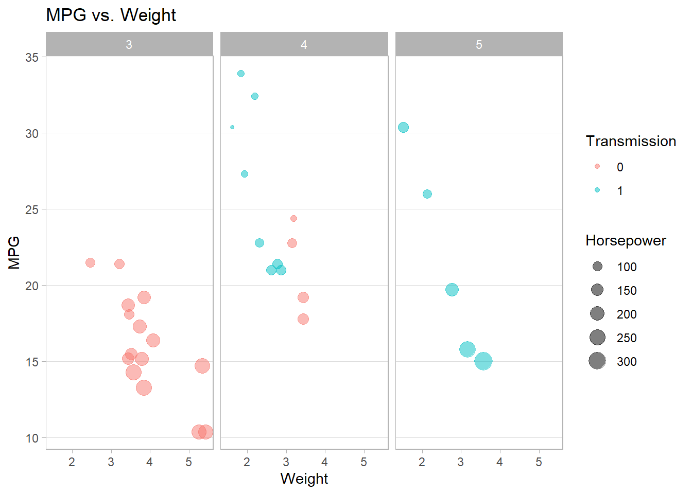
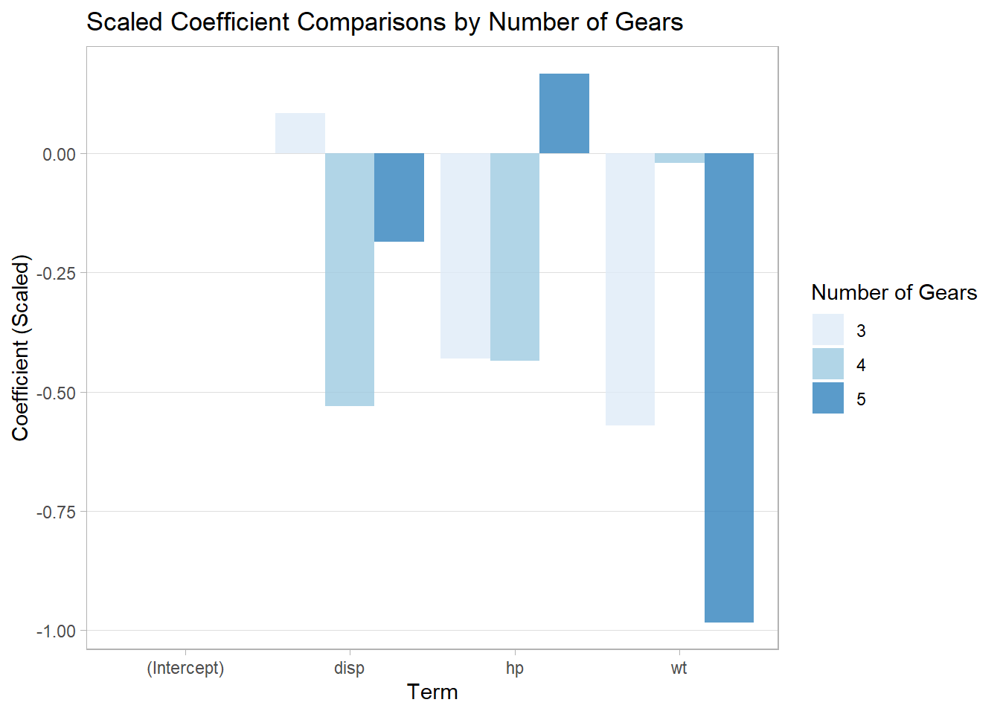

13 Recommended R Libraries
The following is a list of recommended R libraries to install–they can be helpful for data management, graphing, and formatting.
13.1 tidyverse
The tidyverse package is a metapackage consisting of other libraries. The most useful ones for a beginner, I believe, are ggplot2, dplyr, tidyr, and purrr.
For more information, see the tidyverse website.
13.1.1 ggplot2
The library ggplot2 offers visualization tools with a modern aesthetic. The following is an example of a small-multiples3 scatter plot. For more information, see the ggplot2 website.
ggplot(mtcars) +
aes(y = mpg, x = wt, col = factor(am), size = hp) +
geom_point(alpha = 0.5) +
labs(y = 'MPG',
x = 'Weight',
col = 'Transmission',
size = 'Horsepower',
title = 'MPG vs. Weight') +
facet_wrap(~ gear) +
theme_light() +
theme(panel.grid.minor = element_blank(),
panel.grid.major.x = element_blank())
13.1.2 dplyr
The dplyr library provides aggregation tools for data management. The following is an example of calculating the mean and median MPG by gear.
For more information, see the dplyr website.
my_agg <- mtcars %>%
select(mpg, gear) %>%
group_by(gear) %>%
summarise(mean_mpg = mean(mpg),
median_mpg = median(mpg))
my_agg## # A tibble: 3 x 3
## gear mean_mpg median_mpg
## <dbl> <dbl> <dbl>
## 1 3 16.1 15.5
## 2 4 24.5 22.8
## 3 5 21.4 19.713.1.3 tidyr
The tidyr library provides pivoting tools to reshape your dataset. The following are examples of how to reformat an aggregation from dplyr’s functions.
For more information, see the tidyr website.
# Aggregation
my_agg <- mtcars %>%
select(mpg, gear, am) %>%
group_by(gear, am) %>%
summarise(mean_mpg = mean(mpg))
# Pivot wide
my_agg2 <- my_agg %>%
pivot_wider(id_cols = gear, # rows
names_from = am, # columns
values_from = mean_mpg) # values
my_agg2## # A tibble: 3 x 3
## # Groups: gear [3]
## gear `0` `1`
## <dbl> <dbl> <dbl>
## 1 3 16.1 NA
## 2 4 21.0 26.3
## 3 5 NA 21.4# Pivot long
my_agg2 %>%
pivot_longer(2:3,
names_to = 'am',
values_to = 'mpg',
values_drop_na = TRUE) # drop NA values## # A tibble: 4 x 3
## # Groups: gear [3]
## gear am mpg
## <dbl> <chr> <dbl>
## 1 3 0 16.1
## 2 4 0 21.0
## 3 4 1 26.3
## 4 5 1 21.413.1.4 purrr
The purrr library offers functionals similar to the *apply() functions (the former’s map() operates similarly as the latter’s lapply()); however, the former contains functions that maintain type consistency. For example, there is a function called map_dbl() that throws an error if the output is not a double vector (i.e., a numeric vector), which is useful when you want to catch your program’s errors.
The following are some examples from purrr. For more information on how to use these and other functions within the library, see the purrr website.
## $mpg
## [1] 20.09062
##
## $cyl
## [1] 6.1875
##
## $disp
## [1] 230.7219
##
## $hp
## [1] 146.6875
##
## $drat
## [1] 3.596563
##
## $wt
## [1] 3.21725
##
## $qsec
## [1] 17.84875
##
## $vs
## [1] 0.4375
##
## $am
## [1] 0.40625
##
## $gear
## [1] 3.6875
##
## $carb
## [1] 2.8125## mpg cyl disp hp drat wt qsec
## 20.090625 6.187500 230.721875 146.687500 3.596563 3.217250 17.848750
## vs am gear carb
## 0.437500 0.406250 3.687500 2.812500## # A tibble: 1 x 11
## mpg cyl disp hp drat wt qsec vs am gear carb
## <dbl> <dbl> <dbl> <dbl> <dbl> <dbl> <dbl> <dbl> <dbl> <dbl> <dbl>
## 1 20.1 6.19 231. 147. 3.60 3.22 17.8 0.438 0.406 3.69 2.81Below is an example of combining purrr, dplyr and ggplot2 to compare the scaled coefficients from several models using different subsets of mtcars.
# Split the dataset and scale the coefficients.
scaled <- mtcars %>%
split(.$gear) %>%
map(~ as.data.frame(scale(.x)))
map(scaled, head) # see 1st few rows for each subset.## $`3`
## mpg cyl disp hp drat
## Hornet 4 Drive 1.56996818 -1.2353648 -0.7200636 -1.38675494 -0.19244960
## Hornet Sportabout 0.76916577 0.4492236 0.3552876 -0.02376495 0.06333784
## Valiant 0.59120968 -1.2353648 -1.0679713 -1.49160032 -1.36176363
## Duster 360 -0.53584556 0.4492236 0.3552876 1.44407041 0.28258422
## Merc 450SE 0.08700076 0.4492236 -0.5324043 0.08108043 -0.22899066
## Merc 450SL 0.35393489 0.4492236 -0.5324043 0.08108043 -0.22899066
## wt qsec vs am gear carb
## Hornet 4 Drive -0.8134523 1.29489500 1.9321836 NaN NaN -1.4182716
## Hornet Sportabout -0.5433420 -0.49780861 -0.4830459 NaN NaN -0.5673086
## Valiant -0.5193322 1.87270856 1.9321836 NaN NaN -1.4182716
## Duster 360 -0.3872782 -1.37193681 -0.4830459 NaN NaN 1.1346173
## Merc 450SE 0.2129670 -0.21630969 -0.4830459 NaN NaN 0.2836543
## Merc 450SL -0.1951998 -0.06815237 -0.4830459 NaN NaN 0.2836543
##
## $`4`
## mpg cyl disp hp drat
## Mazda RX4 -0.66960225 1.3540064 0.9505021 0.7917156 -0.4588273
## Mazda RX4 Wag -0.66960225 1.3540064 0.9505021 0.7917156 -0.4588273
## Datsun 710 -0.32848412 -0.6770032 -0.3859407 0.1351710 -0.6188834
## Merc 240D -0.02526801 -0.6770032 0.6086811 -1.0620575 -1.1310627
## Merc 230 -0.32848412 -0.6770032 0.4570463 0.2124115 -0.3948049
## Merc 280 -1.01072038 1.3540064 1.1458283 1.2937791 -0.3948049
## wt qsec vs am gear carb
## Mazda RX4 0.005268687 -1.5521599 -2.1408721 0.6770032 NaN 1.2794158
## Mazda RX4 Wag 0.408323233 -1.2051700 -2.1408721 0.6770032 NaN 1.2794158
## Datsun 710 -0.468913132 -0.2199668 0.4281744 0.6770032 NaN -1.0235326
## Merc 240D 0.906214143 0.6413116 0.4281744 -1.3540064 NaN -0.2558832
## Merc 230 0.842989901 2.4382232 0.4281744 -1.3540064 NaN -0.2558832
## Merc 280 1.301365659 -0.4120504 0.4281744 -1.3540064 NaN 1.2794158
##
## $`5`
## mpg cyl disp hp drat wt
## Porsche 914-2 0.6938001 -1 -0.7115728 -1.0171748 1.3195547 -0.6015200
## Lotus Europa 1.3545620 -1 -0.9297723 -0.8032375 -0.3748151 -1.3671575
## Ford Pantera L -0.8379663 1 1.2859917 0.6651507 0.7804370 0.6562258
## Ferrari Dino -0.2522909 0 -0.4977027 -0.2003231 -0.7598992 0.1677809
## Maserati Bora -0.9581049 1 0.8530562 1.3555848 -0.9652774 1.1446708
## qsec vs am gear carb
## Porsche 914-2 0.9376493 -0.4472136 NaN NaN -0.920358
## Lotus Europa 1.1145643 1.7888544 NaN NaN -0.920358
## Ford Pantera L -1.0084153 -0.4472136 NaN NaN -0.153393
## Ferrari Dino -0.1238405 -0.4472136 NaN NaN 0.613572
## Maserati Bora -0.9199578 -0.4472136 NaN NaN 1.380537# Obtain the coefficients
coefs <- scaled %>%
map(~ lm(mpg ~ wt + hp + disp, .x)) %>%
map(~ coef(summary(.x)))
coefs## $`3`
## Estimate Std. Error t value Pr(>|t|)
## (Intercept) 2.525720e-16 0.1587713 1.590791e-15 1.0000000
## wt -5.713684e-01 0.3115032 -1.834230e+00 0.0937885
## hp -4.306828e-01 0.2493851 -1.726979e+00 0.1121072
## disp 8.408336e-02 0.3589857 2.342248e-01 0.8191129
##
## $`4`
## Estimate Std. Error t value Pr(>|t|)
## (Intercept) 2.970767e-16 0.1187895 2.500866e-15 1.00000000
## wt -2.034460e-02 0.3011412 -6.755835e-02 0.94779518
## hp -4.342680e-01 0.2117560 -2.050795e+00 0.07441627
## disp -5.307267e-01 0.3487121 -1.521962e+00 0.16651485
##
## $`5`
## Estimate Std. Error t value Pr(>|t|)
## (Intercept) 3.863715e-17 0.1057642 3.653139e-16 1.0000000
## wt -9.831730e-01 0.3021465 -3.253961e+00 0.1898125
## hp 1.675696e-01 0.3475996 4.820766e-01 0.7140264
## disp -1.861314e-01 0.2721580 -6.839094e-01 0.6181268# Create columns for the variables and
# indicators for the subsets.
coefs2 <- coefs %>%
map(as.data.frame) %>%
map(~ mutate(.x, Term = rownames(.x))) %>%
map2_df(3:5, ~ mutate(.x, Gear = .y)) %>%
select(Gear, Term, everything())
coefs2## Gear Term Estimate Std. Error t value Pr(>|t|)
## 1 3 (Intercept) 2.525720e-16 0.1587713 1.590791e-15 1.00000000
## 2 3 wt -5.713684e-01 0.3115032 -1.834230e+00 0.09378850
## 3 3 hp -4.306828e-01 0.2493851 -1.726979e+00 0.11210723
## 4 3 disp 8.408336e-02 0.3589857 2.342248e-01 0.81911285
## 5 4 (Intercept) 2.970767e-16 0.1187895 2.500866e-15 1.00000000
## 6 4 wt -2.034460e-02 0.3011412 -6.755835e-02 0.94779518
## 7 4 hp -4.342680e-01 0.2117560 -2.050795e+00 0.07441627
## 8 4 disp -5.307267e-01 0.3487121 -1.521962e+00 0.16651485
## 9 5 (Intercept) 3.863715e-17 0.1057642 3.653139e-16 1.00000000
## 10 5 wt -9.831730e-01 0.3021465 -3.253961e+00 0.18981249
## 11 5 hp 1.675696e-01 0.3475996 4.820766e-01 0.71402636
## 12 5 disp -1.861314e-01 0.2721580 -6.839094e-01 0.61812678# Plot the scaled coefficients.
## Set the canvas.
ggplot(coefs2) +
## Set the aesthetics.
aes(y = Estimate,
x = Term,
fill = factor(Gear)) + # Different bars for different gears.
## Create the bars.
geom_col(position = 'dodge', # Set bars beside each other.
alpha = 0.8) + # Set transparency.
## Color the bars.
scale_fill_brewer(palette = 'Blues') +
## Relabel y-axis and other labels.
labs(y = 'Coefficient (Scaled)',
fill = 'Number of Gears',
title = 'Scaled Coefficient Comparisons by Number of Gears') +
## Customize the background.
theme_light() +
theme(panel.grid.minor = element_blank(),
panel.grid.major.x = element_blank())
13.2 knitr
The knitr library is an “engine for dynamic report generation,” which allows for better formatted tables and documentation capabilities when using R Markdown.4 The following example demonstrates kable() to format a table.
| 0 | 1 | |
|---|---|---|
| 3 | 15 | 0 |
| 4 | 4 | 8 |
| 5 | 0 | 5 |
13.3 stargazer
The stargazer library allows one to format a regression model to be closer to journal-quality guidelines.
For more information, see its documentation on CRAN.
##
## Please cite as:## Hlavac, Marek (2018). stargazer: Well-Formatted Regression and Summary Statistics Tables.## R package version 5.2.2. https://CRAN.R-project.org/package=stargazerIf you are using RGui or R Studio and not R Markdown, I recommend to set type = 'text' so that only textual output will be produced instead of LaTeX or HTML code.
##
## ===============================================
## Dependent variable:
## ---------------------------
## mpg
## -----------------------------------------------
## wt -3.113**
## (1.179)
##
## hp -0.043***
## (0.014)
##
## disp 0.005
## (0.012)
##
## gear 0.652
## (1.212)
##
## am 1.605
## (1.782)
##
## Constant 32.108***
## (4.844)
##
## -----------------------------------------------
## Observations 32
## R2 0.842
## Adjusted R2 0.812
## Residual Std. Error 2.616 (df = 26)
## F Statistic 27.709*** (df = 5; 26)
## ===============================================
## Note: *p<0.1; **p<0.05; ***p<0.01If you happen to use R Markdown, then set type = 'html' for HTML documents and omit type for PDF documents.
# If using RMarkdown...
stargazer(my_ols,
type = 'html', # for html documents.
# Set asterisks for each p-value level.
notes.append = FALSE,
notes = c("<sup>⋆</sup>p<0.1; <sup>⋆⋆</sup>p<0.05; <sup>⋆⋆⋆</sup>p<0.01")) | Dependent variable: | |
| mpg | |
| wt | -3.113** |
| (1.179) | |
| hp | -0.043*** |
| (0.014) | |
| disp | 0.005 |
| (0.012) | |
| gear | 0.652 |
| (1.212) | |
| am | 1.605 |
| (1.782) | |
| Constant | 32.108*** |
| (4.844) | |
| Observations | 32 |
| R2 | 0.842 |
| Adjusted R2 | 0.812 |
| Residual Std. Error | 2.616 (df = 26) |
| F Statistic | 27.709*** (df = 5; 26) |
| Note: | ⋆p<0.1; ⋆⋆p<0.05; ⋆⋆⋆p<0.01 |
We can also input several models into stargazer().
mtcars %>%
split(.$gear) %>%
map(~ lm(mpg ~ wt + hp + disp, .x)) %>%
stargazer(type = 'html',
column.labels = paste(3:5, 'Gears'),
notes.append = FALSE,
notes = c("<sup>⋆</sup>p<0.1; <sup>⋆⋆</sup>p<0.05; <sup>⋆⋆⋆</sup>p<0.01"))| Dependent variable: | |||
| mpg | |||
| 3 Gears | 4 Gears | 5 Gears | |
| (1) | (2) | (3) | |
| wt | -2.313* | -0.170 | -7.995 |
| (1.261) | (2.512) | (2.457) | |
| hp | -0.030 | -0.088* | 0.011 |
| (0.018) | (0.043) | (0.023) | |
| disp | 0.003 | -0.072 | -0.011 |
| (0.013) | (0.047) | (0.016) | |
| Constant | 29.497*** | 41.752*** | 42.477* |
| (2.838) | (3.117) | (3.377) | |
| Observations | 15 | 12 | 5 |
| R2 | 0.703 | 0.877 | 0.986 |
| Adjusted R2 | 0.622 | 0.831 | 0.944 |
| Residual Std. Error | 2.073 (df = 11) | 2.171 (df = 8) | 1.575 (df = 1) |
| F Statistic | 8.675*** (df = 3; 11) | 18.987*** (df = 3; 8) | 23.506 (df = 3; 1) |
| Note: | ⋆p<0.1; ⋆⋆p<0.05; ⋆⋆⋆p<0.01 | ||
For more on R Markdown, see the R Markdown book by Yihui Xie, J. J. Allaire, and Garrett Grolemund.
13.4 Summary
| Library | Function | Description | Example |
|---|---|---|---|
| ggplot2 | ggplot(data) + aes(y, x, …) + geom_point() | Scatter plot with ggplot2. | ggplot(mtcars) + aes(y = mpg, x = wt, col = factor(am), size = hp) + geom_point(alpha = 0.5) |
| dplyr | select(data, …), group_by(data, data…), summarise(data, …) | Select, group by, and summarise data. | mtcars %>% select(mpg, gear) %>% group_by(gear) %>% summarise(mean_mpg = mean(mpg), median_mpg = median(mpg)) |
| tidyr | pivot_wider(data, …), pivot_longer(data, …) | Pivot data long or wide. |
my_agg <- mtcars %>% select(mpg, gear, am) %>% group_by(gear, am) %>% summarise(mean_mpg = mean(mpg)) my_agg2 <- my_agg %>% pivot_wider(id_cols = gear, names_from = am, values_from = mean_mpg) |
| purrr | map(.x, .f) | Apply a function over a data’s elements iteratively. | map(mtcars, mean) |
| knitr | kable(x) | Format a table. |
my_table <- with(mtcars, table(gear, am)) kable(my_table) |
| stargazer | stargazer(x) | Format a regression. |
my_ols <- lm(mpg ~ wt + hp + disp + gear + am, mtcars) stargazer(my_ols, type = ‘text’) |